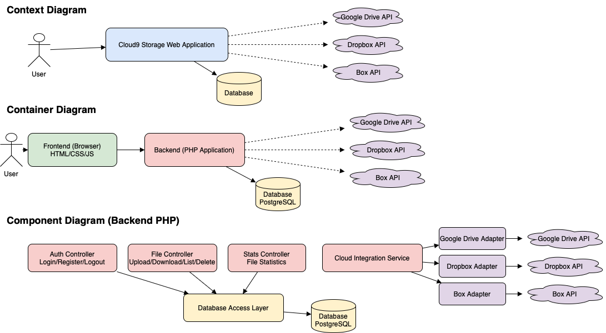

Specificația Cerințelor Sistemului (SRS) pentru Cloud9 Storage
Budăi Marius Gabriel și Lungu Andra Iasmina
Rezumat
Acest document prezintă cerințele funcționale și nefuncționale pentru aplicația web Cloud9 Storage, un sistem de gestionare a fișierelor în cloud, destinat utilizatorilor care doresc să își organizeze, încarce și acceseze fișierele personale într-un mod securizat și eficient.
1. Introducere
1.1 Scop
Scopul acestui document este de a defini cerințele software pentru aplicația Cloud9 Storage. Acesta descrie funcționalitățile principale, constrângerile sistemului, interacțiunile cu utilizatorul și cerințele externe, oferind o bază pentru dezvoltare, testare și mentenanță.
1.2 Utilizatori țintă
Utilizatorii țintă sunt persoane fizice care doresc să-și gestioneze fișierele în siguranță în cloud. Aceștia pot fi studenți, profesioniști sau utilizatori obișnuiți care caută un sistem simplu și eficient de stocare și accesare a fișierelor personale.
2. Cerințe generale
Aplicația trebuie să fie accesibilă prin intermediul unui browser web modern.
Interfața trebuie să fie intuitivă și responsivă.
Toate operațiunile critice trebuie să fie protejate prin autentificare.
3. Cerințe funcționale
3.1 Autentificare și înregistrare utilizator
3.1.1 Utilizatorii trebuie să se poată înregistra cu o adresă de email și o parolă.
3.1.2 Utilizatorii trebuie să se poată autentifica pentru a accesa funcționalitățile aplicației.
3.2 Încărcare și descărcare fișiere
3.2.1 Utilizatorii pot încărca fișiere de diferite tipuri (documente, imagini, etc.).
3.2.2 Utilizatorii pot descărca fișierele proprii din cloud.
3.3 Vizualizare și organizare fișiere
3.3.1 Fișierele sunt afișate într-o listă cu detalii relevante (nume, dată încărcare, tip).
3.3.2 Utilizatorii pot filtra fișierele după tip (ex: imagini, PDF, etc.).
3.3.3 Utilizatorii pot căuta fișiere după nume.
3.4 Statistici
3.4.1 Aplicația afișează numărul total de fișiere și spațiul ocupat de acestea.
3.5 Deconectare
3.5.1 Utilizatorii se pot deconecta în siguranță din aplicație.
4. Cerințe de interacțiune cu utilizatorul
4.1 Interfața trebuie să ofere feedback vizual pentru acțiuni (ex: încărcare, ștergere, filtrare).
4.2 Operațiunile de filtrare și căutare trebuie să fie asincrone (fără reîncărcarea paginii).
4.3 Erorile trebuie afișate clar și concis utilizatorului.
5. Cerințe nefuncționale
5.1 Aplicația trebuie să asigure securitatea datelor utilizatorilor (parole criptate, acces restricționat).
5.2 Performanța aplicației trebuie să permită încărcarea rapidă a fișierelor și interacțiuni fluide.
5.3 Aplicația trebuie să fie compatibilă cu principalele browsere moderne.
6. Constrângeri
6.1 Aplicația va fi dezvoltată folosind PHP pentru backend și PostgreSQL pentru stocarea datelor.
6.2 Interfața va fi realizată în HTML, CSS și JavaScript, fără utilizarea de framework-uri.
6.3 Aplicația va fi găzduită pe Railway și trebuie să suporte conectivitate externă securizată.
7. Cerințe de calitate
7.1 Sistemul trebuie să funcționeze fără erori critice în cel puțin 95% din cazuri (fiabilitate).
7.2 Interfața utilizator trebuie să poată fi înțeleasă și folosită fără training (usability).
7.3 Aplicația trebuie să ruleze atât pe desktop cât și pe dispozitive mobile (portabilitate).
7.4 Parolele trebuie să fie criptate și datele protejate împotriva accesului neautorizat (securitate).
8. Arhitectura sistemului
Arhitectura aplicației Cloud9 Storage este prezentată utilizând modelul C4, care ilustrează progresiv: contextul aplicației, containerele sale principale și componentele backend-ului.

Figura: Diagrama arhitecturală a sistemului, care include cele trei stagii: Context, Container și Component.
9. Glosar
Cloud9 Storage – Aplicația propusă pentru gestionarea fișierelor în cloud.
UI – Interfața utilizator (User Interface).
Backend – Componenta aplicației care rulează pe server și gestionează logica și datele.